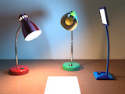
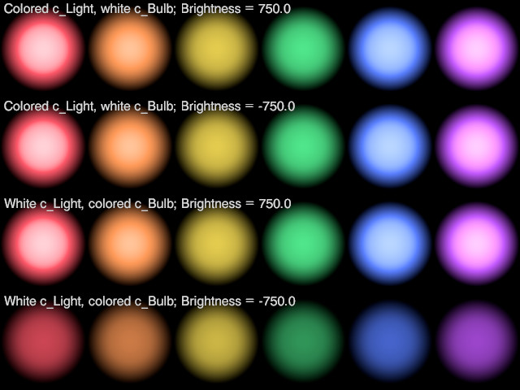

 DeskLamp is a library module proposed for the Persistence of Vision Raytracer (POV-Ray) Object Collection that models a flexible gooseneck hooded desk lamp with a built-in light source. The color and brightness of the light are specified by the user, and realistic light fading (attenuation with distance) is used.
If you use Lightsys IV, you can synchronize DeskLamp and Lightsys IV.
|
| Key Files | |
|---|---|
| File | Description |
desklamp.html |
The user manual (this document) |
desklamp.inc |
The DeskLamp library |
desklamp.pov |
A scene description file demonstrating the use of DeskLamp |
desklamp_lighting.pov |
A scene description file demonstrating bulb color filtering |
desklamp_ls4.pov |
A scene description file demonstrating usage of DeskLamp with Lightsys IV |
desklamp.jpg |
Sample output images |
desklamp_lighting.jpg |
|
desklamp_ls4.jpg |
|
desklamp_thumbnail.jpg |
|
desklamp_tech.html |
A technical manual describing lamp construction tools |
desklamp_flex_angle.png |
An illustration for the technical manual. |
| Administrative Files | |
| File | Description |
READMEnnnnnn.html |
Important information about using the POV-Ray Object Collection |
desklamp_description.txt |
A brief description of DeskLamp |
desklamp_keywords.txt |
A list of keywords |
desklamp_prereqs.txt |
Prerequisites |
desklamp.css |
Other administrative files |
cc-LGPL-a.png |
|
Versionnnnnnn.js |
|
The italicized nnnnnn in some of the file names represents the 6-digit number that is in the name of the .zip file as downloaded from lib.povray.org. If you downloaded this module from some other repository, the files cc-LGPL-a.png, READMEnnnnnn.html, and Versionnnnnnn.js may not be present. Please see the Object Collection User’s Guide if READMEnnnnnn.html is not present.
The demo scene desklamp_ls4.pov requires Lightsys IV version 4b or later; however, the sole purpose of this scene is to demonstrate how DeskLamp can be used alongside Lightsys. Lightsys is not a prerequisite for usage of the DeskLamp library.
All file names in this module and all global and local identifiers defined in desklamp.inc comply fully with the Object Collection naming standards, as revised August 2008 and proposed August 2012. The files in this module may be safely stored in the same folder as other fully compliant Object Collection modules.
The reserved prefixes for this module are “DeskLamp” and “Lamp,” including any uppercase and lowercase variants. DeskLamp uses the Object Collection module RoundEdge, which reserves the prefixes “RoundEdge” and “RE,” including any uppercase and lowercase variants. To avoid conflicts, do not introduce into your scene description file any identifiers with any of these prefixes as names, or any identifiers that start with any of these prefixes plus an underscore.
The standard include files functions.inc, math.inc, and transforms.inc are used by desklamp.inc. In addition, RoundEdge uses shapes.inc. The identifier View_POV_Include_Stack from the standard include file debug.inc is referenced by desklamp.inc, although debug.inc itself is not used.
DeskLamp has two macros that interface with Lightsys IV. These macros reference certain Lightsys IV identifiers, prefixed with “Lightsys_,” but DeskLamp will not invoke these identifiers unless the user explicitly calls these macros. Note that, as Lightsys is not part of the Object Collection, there is no guarantee that its identifiers and file names will not conflict with those of compliant Object Collection modules. If you use Lightsys IV, do not keep Lightsys IV in the same folder as your Object Collection modules.
All DeskLamp light and color calculations are in linear color space, so the following setting is strongly recommended:
global_settings { assumed_gamma 1 }
This will impact color definitions from colors.inc as well as from non-POV sources, so you may wish to utilize macro Lamp_Color() for such colors.
If you are using radiosity, follow these steps:
Set Lamp_Radiosity to true.
#declare Lamp_Radiosity = true;
If you are using a POV-Ray version older than 3.7, set max_sample to a positive value in the radiosity block, and declare Lamp_Max_Sample with that same value. For example:
#declare Lamp_Max_Sample = 15;
global_settings { radiosity { max_sample Lamp_Max_Sample } }
If you are using POV-Ray 3.7 or later, set a very high count with a small default importance. This avoids radiosity artifacts due to the extreme surface brightness of the interior of the hood. For example:
global_settings { radiosity { count 50000, 100000 } }
#default { radiosity { importance 0.002 } }
Alternatively, you may do the same as for older POV-Ray versions, as described in the previous step.
Include this file once prior to using any of DeskLamp’s macros and functions:
#include "desklamp.inc"
Including the file more than once is harmless, though unnecessary.
Before creating any lamps, declare additional global parameters as needed. Most importantly, your scene’s lumens calibration and unit of length must be set; for example:
#declare Lamp_Lumen = 0.02; #declare Lamp_Scale = LAMP_METER;
See scale conversions for more information about Lamp_Scale. If you are using Lightsys IV, see Lightsys synchronization for setting the unit of length and lumens calibration. See finish notes for radiosity information.
Do not change the default global_settings { ambient_light }, or some lamp colors will not turn out correct. Use the #default { finish { ambient } } directive instead.
As Lamp_Radiosity and Lamp_Max_Sample are intended to mirror POV-Ray global settings, these two parameters should be set once and not changed thereafter. Lamp_Radiosity should be set prior to including desklamp.inc, and Lamp_Max_Sample should be set prior to creating any lamps. The remaining parameters may be declared or changed at any time.
| Identifier | Type | Description | Default |
|---|---|---|---|
Lamp_371Patch |
float/Boolean | Setting this to true enables true power inverse squared light fading when #version is set to 3.71. Do not set this to true unless you are using an unofficial POV-Ray patch based on the discontinued POV-Ray 3.7.1. See light attenuation notes. |
false |
Lamp_c_Ambient |
color | Set this to whatever value you use for #default { finish { ambient } }. If you do not change POV-Ray’s default ambient finish, you may ignore this parameter; see finish notes for details.
|
See finish notes. |
Lamp_Debug |
float/Boolean | Sets “verbose” mode: if true, the light fixture macro will write light_source code to the debug stream. |
false |
Lamp_Diffuse |
float | Set this to whatever value you use for #default { finish { diffuse } }. If you do not change POV-Ray’s default diffuse reflection finish, you may ignore this parameter. See finish notes. |
0.6 |
Lamp_Fade |
float | The light source fade_distance in centimeters to be used when true power inverse squared light fading is not used. |
0.3 |
Lamp_Lumen |
float | A global brightness factor to determine how bright a lumen should render. Specifically, this is the luminance (gray level) of a 1 square meter white surface illuminated by 1 lumen. | 0.01 |
Lamp_Max_Sample |
float | If you are using radiosity with a positive max_sample, set Lamp_Max_Sample to the same value. Setting max_sample is recommended for POV-Ray versions older than 3.7; versions 3.7 and later may also benefit, by allowing for less extreme radiosity counts. See finish notes for additional information. |
0 |
Lamp_Radiosity |
float/Boolean | Whether or not radiosity is used in the scene. See finish notes. | false |
Lamp_Reflect |
float/Boolean | Whether or not a lit light bulb should appear in reflections. If your scene has objects with both reflection and a highlight (phong or specular) in their finishes, you may not want both the reflected bulb and the highlight.
An unlit bulb will always be reflected. Note: The hood interior will always appear in reflections, even when its radiosity contribution is faked with a light source. |
false |
Lamp_Scale |
float | The number of centimeters per POV unit in your scene. See scale conversions for more information. | 1 |
Lamp_c_Weights |
color | The color channel luminance function, used for gray scale calculations. The default value reflects the ITU-R BT.709/sRGB chromaticities. You will not normally need to change it. | rgb <0.2126, 0.7152, 0.0722> |
Lamp_Radiositylight_source. If radiosity is used with POV-Ray 3.5 or 3.6, which lack the no_radiosity capability, some surface brightnesses must be lowered to counter the redundant radiosity from the light bulb object. In order to do these, DeskLamp needs to know whether or not radiosity is used. It is for this reason that Lamp_Radiosity must be set.Lamp_Max_Samplemax_sample is set in the radiosity block, the consequently reduced radiosity must be made up with an additional light_source. It is for this reason that Lamp_Max_Sample must be set.Lamp_c_Ambient defaultrgb 0 if Lamp_Radiosity is set to true prior to including desklamp.inc;
rgb 0 if #version is 3.8 or greater—that is, the same as the proposed default ambient for 3.8;
rgb 0.1 otherwise—that is, the same as the default ambient for POV-Ray 3.7 and older.
Lamp_c_Ambient and Lamp_Diffuse#default directive. The parameters are used only to keep built-in lamp textures consistent with the rest of your scene. Remember, do not change the default global_settings { ambient_light }.#version less than 3.7, it is strongly recommended that you set the default ambient to zero:
global_settings { radiosity { ... } }
#declare Lamp_Radiosity = yes;
#declare Lamp_c_Ambient = rgb 0;
#default { finish { ambient rgb 0 } }
Note that if Lamp_Radiosity is set to true prior to inclusion of desklamp.inc, then Lamp_c_Ambient will be set to zero automatically. Remember, do not change the default global_settings { ambient_light }.
True power light fading was introduced during POV-Ray 3.7.1 development, with earlier versions using an approximation, as described in the light fading reference. Since 3.7.1 has been retracted, official POV-Ray 3.8 will shut off distance attenuation altogether if true power fading is requested with #version set less than 3.8. Accordingly, DeskLamp will normally implement true inverse squared fading only for versions 3.8 and later.
However, some unofficial patches, such as the last UberPOV release, are based on POV-Ray 3.7.1, and will refuse to render if #version is set at 3.8. Setting Lamp_371Patch to true tells DeskLamp to use true inverse squared fading when #version is set to 3.71.
A flexible gooseneck hooded desk lamp. The lamp will be rotated and the neck automatically bent so that the lamp points at a user-specified location or direction. The light fade power is fixed at 2.
If radiosity is not used or if Lamp_Max_Sample is greater than zero, an additional light_source will be added to compensate for the loss of diffuse reflection off the inside of the lamp hood.
The interior of the light bulb socket, which will be hidden in practice, is rudimentary.
Scalar arguments will be automatically promoted to colors or vectors where necessary.
| Formal Parameter | Type | Description |
|---|---|---|
Height |
float | The height in centimeters of the unflexed fixture from the bottom of its base to the center of the bulb socket. Values less than 30 are disallowed. If you are accustomed to using inches, multiply your inches value by |
pv_Base |
point vector | The location of the base of the fixture, using your scene’s unit of length. |
v_Up |
vector | The up direction for the fixture. This would be |
v_Aim |
point or 4-D vector | The point at which the light is aimed, using your scene’s unit of length. If Cautions: If |
Status |
float | The on/off status. Although the switch type is binary, a value between 0 and 1 will be treated as a dimmer setting. |
c_Light |
color | The color of the light. Any filter or transmit components are ignored. This color will be filtered by the bulb color. |
Brightness |
float | The light’s brightness in lumens. If negative, then the absolute value will be used, but reduced according to the luminance of the bulb color ( The brightness calculation assumes a spherical bulb that radiates uniformly in all directions. If this assumption does not apply to your bulb object, you may want to adjust the brightness value accordingly. Note that radiosity from the interior of the hood will add to the total illumination given by the lamp. If |
t_Fixture |
texture | A texture for the base of the fixture and the exterior of the hood. To apply different textures to the base and the hood, you can use an object texture with |
Bulb |
object | A light bulb. The object—at least the part that should glow—must be untextured in order for the glow to work. Some pre-declared bulbs are available to use. |
c_Bulb |
color | The color of the bulb. Any filter or transmit components are ignored. |
v4_Soft |
vector/4-tuple | Area light control, for soft shadows and an extended light source. The components are:
|
Use_photons |
float/Boolean | Whether or not the light shoots photons. This works only if you have turned on photons in the |
v_Flags |
vector | Miscellaneous properties of the lamp:
|
The following illustration shows the filtering effects of the Brightness and c_Bulb arguments. It was rendered with UberPOV glare desaturation (+GLD) to give a proper luminance impression. Each spot is the illumination from a spotlight 1 meter from the surface. The bottom row shows that a negative Brightness causes the color of the bulb to reduce the lumens output. (The bulbs themselves are not rendered.) A light color such as yellow reduces the luminance only slightly, but a dark color such as blue reduces the luminance considerably. Although the second row from the top also has a negative Brightness, the luminance is not reduced, because the bulb is white.

These macros convert a traditional color specification so that it looks correct with assumed_gamma 1. The macros are the same except for spelling. Colors from colors.inc, RGB values from color pickers or eyedropper tools, and X11 color values should be passed to one of these macros before using the colors. RGB colors borrowed from older POV-Ray scene description files may also benefit from one of these macros.
For correct light relationships, assumed_gamma must be set to 1. This sets up a linear color space and is the only way to ensure, for example, that a 2000 lumen lamp will render twice as bright as a 1000 lumen lamp. However, colors are traditionally specified for non-linear gamma 2.2 or sRGB image formats, and tend to look washed out with assumed_gamma 1. These macros convert such colors to a linear format.
If you are already accustomed to using assumed_gamma 1, and are not using colors from outside sources, you will not need to use these macros.
Note that linear color is appropriate only for the parsing and tracing phases. Output options such as Display_Gamma and File_Gamma should normally remain at gamma 2.2 or sRGB.
| Formal Parameter | Type | Description |
|---|---|---|
Color or Colour |
color | The original non-linear color specification, from colors.inc or from a non-POV source. |
#include "colors.inc"
#include "desklamp.inc"
global_settings { assumed_gamma 1 }
object
{ MyObject1
pigment { Lamp_Color (MediumSpringGreen) } // colors.inc identifier
}
object
{ MyObject2
pigment { Lamp_Color (<255, 153, 51> / 255) } // from a color picker
}
assumed_gamma must be set to some value before calling these macros, or a parse error will result.
assumed_gamma is set to 1.
Lamp_Color (rgb 0.5), not Lamp_Color (0.5).
Converts the wattage of a tungsten incandescent bulb to lumens. This function uses a curve fit to published figures. Results outside the domain 40 W to 150 W are extrapolated.
| Formal Parameter | Type | Description |
|---|---|---|
x |
float | The bulb wattage. |
Wattage is not a measure of brightness; nevertheless, wattage has historically been used as a proxy for brightness. Although the prevalence of energy efficient bulbs for the home market has made this proxy obsolete, the new bulbs are still often marketed in terms of “watt replacement” for the old tungsten bulbs. DeskLamp works exclusively in lumens, and function Lamp_fn_Watts_to_Lumens() is provided as a convenience in case your specification is given in wattage equivalents.
These macros synchronize some DeskLamp and Lightsys IV global parameters. They are useful for using both modules together in the same scene.
The brightness match is calculated with a white light at a distance of 1 meter. Due to differences in the ways DeskLamp and Lightsys IV calculate lumens and light distance fading, the brightness match may vary slightly with distance and light color.
Synchronizes the brightness calibration and unit of length of DeskLamp with those of Lightsys 4b or later. Specifically, it sets Lamp_Lumen and Lamp_Scale to match the current values of Lightsys_Brightness and Lightsys_Scene_Scale, respectively. If the Lightsys parameters have not been set, then the Lightsys default values are assumed.
Call this macro if you are starting with Lightsys’ brightness and scale settings. First declare Lightsys_Brightness and Lightsys_Scene_Scale, then call Lamp_Get_Lightsys() in lieu of setting the DeskLamp parameters. Simply copying the Lightsys parameters to the corresponding DeskLamp parameters will not work.
Synchronizes the brightness calibration and unit of length of Lightsys 4b or later with those of DeskLamp. Specifically, it sets Lightsys_Brightness and Lightsys_Scene_Scale to match the current values of Lamp_Lumen and Lamp_Scale, respectively. If the user has not set the DeskLamp parameters at this point, then the DeskLamp default values are used.
Call this macro if you are starting with DeskLamp’s brightness and scale settings. First declare Lamp_Lumen and Lamp_Scale, then call Lamp_Set_Lightsys() in lieu of setting the Lightsys parameters. Simply copying the DeskLamp parameters to the corresponding Lightsys parameters will not work.
| Identifier | Type | Description |
|---|---|---|
Lamp_Bulb_A19Lamp_Bulb_A60 |
object | The traditional light bulb shape. The base of the bulb, which is the main practical difference between these two types, is not modeled. |
DeskLamp handles the complications of synchronizing the light source with the lamp scale. In order to accomplish this, it must know how many centimeters are in your scene’s unit of length. This is done by setting the parameter Lamp_Scale to one of these values prior to creating any lamps:
| Identifier | Type | Description | Value |
|---|---|---|---|
LAMP_CM |
float | Use this if your scene’s unit is 1 centimeter. | 1 |
LAMP_FOOT |
float | Use this if your scene’s unit is 1 foot. | 30.48 |
LAMP_INCH |
float | Use this if your scene’s unit is 1 inch. | 2.54 |
LAMP_METER |
float | Use one of these if your scene’s unit is 1 meter. | 100 |
LAMP_METRE |
|||
LAMP_YARD |
float | Use this if your scene’s unit is 1 yard. | 91.44 |
For other unit conversions you may download and use the Object Collection module scaleconvert (scaleconvert mirror). Since the base unit for DeskLamp is the centimeter, you would convert your scene’s unit to centimeters. For example, if your scene’s unit is 1 hand, you would use:
#include "scaleconvert.inc"
#declare Lamp_Scale = ScaleConvert ("hand", "cm");
| Identifier | Type | Description | Value |
|---|---|---|---|
DESKLAMP_VERSION |
float | The DeskLamp version, in case the scene file needs that information. | 1.0 |
Any identifiers in desklamp.inc that are not documented in this User Manual or in the Technical Manual are considered “private” and are subject to change or elimination in a future update.
Copyright © 2022 Richard Callwood III. Some rights reserved.
This library is free software; you can redistribute it and/or modify it under the terms of the GNU Lesser General Public License version 2.1 as published by the Free Software Foundation.
This library is distributed in the hope that it will be useful, but WITHOUT ANY WARRANTY; without even the implied warranty of MERCHANTABILITY or FITNESS FOR A PARTICULAR PURPOSE.
| Version | Date | Notes |
|---|---|---|
| n/a | 2005 March 6 | An unpublished lamp module is created for a specific project. |
| n/a | 2021 January 11 | Work is started on a new module more suitable for general use. |
| 1.0 | 2022 September 6 | The module is completed. Formal submission to the Object Collection is expected at a later date. |
{kind=link}